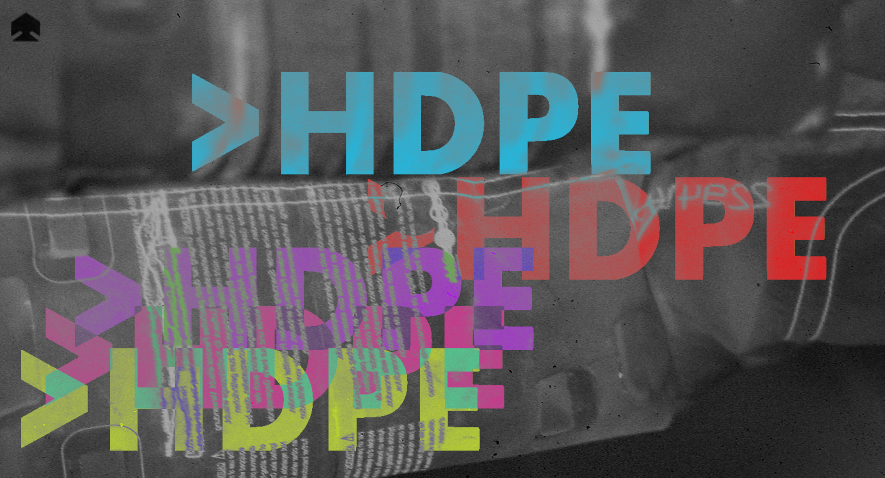
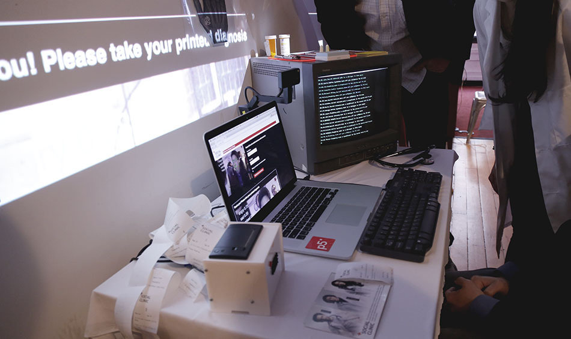
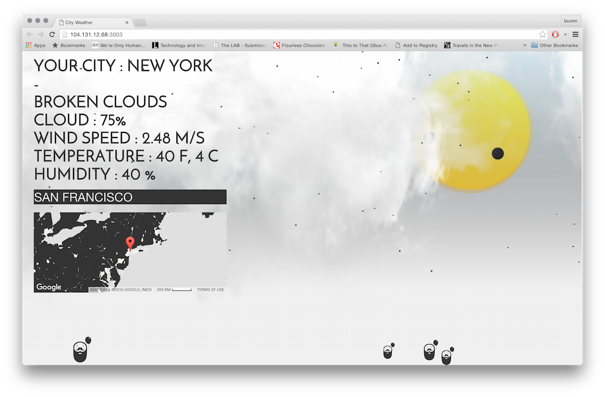

Lauren Lee McCarthy
Back
Next

Her works explore the relationship we have with technology, and how that shapes our culture.
Some works tend to humanize the roles of smart devices.


Today, we are going to be discussing her work titled,
'Follower'